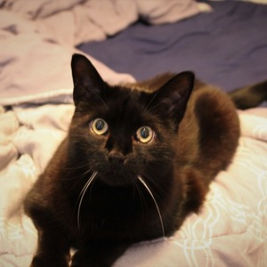

Devin Powell was born in Ashtabula, Ohio on November 20, 1992. He grew up playing sports such as baseball, soccer, and tennis.
He was also active in band from a young age throughout high school playing in marching band, jazz band, and symphonic band. In his spare
time he loved to play video games and even taught himself minor C++ around age 10, just enough to make word-based quizzes and surveys.
Devin was active in the theatre scene in his hometown throughout his high schools years and loved it so much, he went to college with
the hopes of being an actor on broadway someday. Shortly into a musical theatre program, he realized that it was not what he wanted
to dedicate his life to but still had a love for the theatre. In his classes, he discovered technical theatre and what went into putting
on a production. He particularly took an interest in lighting design because he still was required to be connected to the text and have
to think like an actor in many ways while also having to think in a calculative manner to write appropriate cues for every moment in the show.
After graduating from college with his Lighting Design degree, he got accepted for an internship with Walt Disney Imagineering
in Orlando, Florida. He moved to Orlando and worked throughout the parks for 12 months and then the internship ended and it was time to return
home. He wanted to return to theatrical lighting so he got a job at a public theatre in Cleveland, Ohio. After working there for 8 months,
he realized he wanted to finally see Colorado. He moved and decided to pursue his passion for technology and programming in order to be a part
of the future.